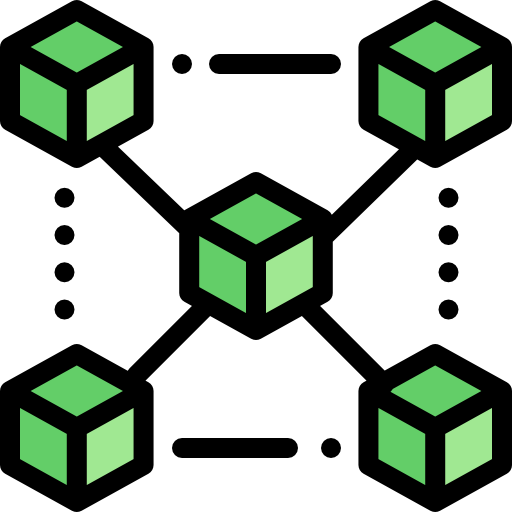

How to think and grow rich with Crypto-Economics!
The blockchain is an undeniably ingenious invention – the brainchild of a person or group of people known by the pseudonym, Satoshi Nakamoto. But since then, it has evolved into something greater, and the main question every single person is asking is: What is Blockchain?
According to a study of 4,800 professionals from around the world, 66% of people believe that innovation will be the biggest factor influencing economic growth over the next 30 years.
In order to thrive (or indeed, survive) in this continuously evolving economy, young professionals will need to understand the driving forces behind scientific and technological development, anticipate the new industries they will enable, and predict the extent to which they will change the jobs we take for granted today.
One of the most promising developments is the advent of blockchain technology. Here’s a brief look at what blockchain technology is, why it was developed, the characteristics that make it unique, and the way it could revolutionize the world in the years to come.
Come and get involved!
BLOCKCHAIN MASTERCLASS KEY TAKEAWAYS Who is this program for? You may take a look at the 6 key takeaways to decide if this is the ideal program for you or your organization
|

Concrete understanding of the entire eco-system of Blockchain and how it works. |

Direct application into personal or professional context, and discover its use cases for your business and industry. |
A network of business leaders and innovators. An opportunity to meet like-minded investors, business leaders to collaborate and integrate ideas. |
|
Be the first to invest before others do! Identify investment portfolio that could potentially reap 10,000% return on investment. |

Learn how to raise funds USD15 million without a solid product, even if you do not have an IT team! |
Discover how bitcoin and altcoin mining could fund your holiday, education, and retirement plans. |
BLOCKCHAIN MASTERCLASS OUTLINEHere is what you’ll learn during the 2 days event;
-
Blockchain Technology Application
- Fundamentals of Blockchain technology
- Understanding the link between blockchain and cryptocurrency
- How it is evolving customer engagement and management style
- Discover transfer and storage of value via cryptocurrency
- Explore the practical use cases by industry
- How Blockchain can change current business models
- Case Study: Blockchain for my current business scenario
-
Raising Funds with ICO
- Discover how startups are raising millions without a product
- Good news: Government regulations on ICO
- Learn how to plan for an ICO
- Discover the methods of building a team from scratch
- Launching your own cryptocurrency
- Uncover the step by step methods from ICO launching to listing your cryptocurrency
- Case Study: Planning for your own ICO
-
Active Income: Cryptocurrency Investment
- Learn the underlying formula of Cryptocurrency Investment
- Explore the opportunities and risk
- Building your portfolio: What to buy and the best time to sell
- Understanding Exchanges: How to start today with just $100
- Storing and safeguarding your Cryptocurrency
- Case Study: Discover the secret to investing the next cryptocurrency with bitcoin-like returns
-
Passive Income: Bitcoin / Altcoin Mining
- The ABCs of Cryptocurrency Mining
- Discover the inherent risks of mining
- Learn how mining can generate consistent passive income
- Explore the difference between GPU and ASIC
- Case Study: Find out the latest hardware that allows you to break even in 4 months or less!
-
Is it too late to join the cryptocurrency craze?
- Summing up
- First step to deploying blockchain to your eco-system
- The impact on blockchain on your industry
- Networking for potential partnership
About Us
The Oxford Blockchain Society was founded by students in 2016.
In 2017, our mission was refined towards fostering Oxford's blockchain ecosystem by maintaining a distributed network of students, academics, and industry actors.
We formed the Oxford Blockchain Network as a platform for bridging ecosystem silos, promoting emergent collaboration and centralising access to resources.